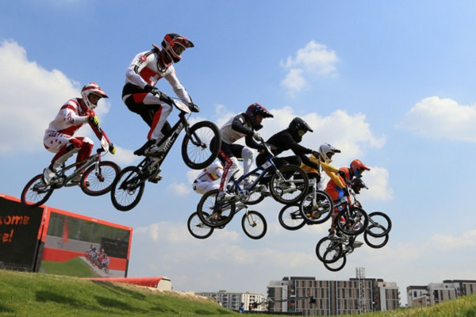

The race is the most common practice BMX.
Much of the race is done at the start. Someone who starts well and who doesn't make any mistakes afterwards, in general, wins the race. It is not a question of making figures during the show jumping under penalty of the yellow / red card type sanction.
A race competition is comparable to a sprint where the sprinter has to cross hurdles over an average distance of 300 meters, with in addition, slight drops.
The pilots are positioned on a slope , called a start hill, or start , with the front wheel pressed against a retractable grid.
